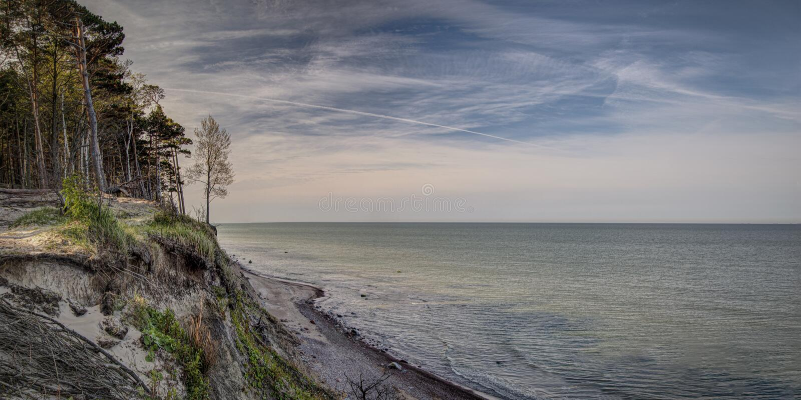

The Dutchman's Cap (Lithuanian: Olando kepurė) is a hill with a 24.4 m high bluff, which is in Lithuania's Seaside Regional Park, near Karklė and 2 km north of Giruliai on the Baltic Sea coast. It was created 12000 - 15000 years ago during the last Baltic glaciation [More info]
